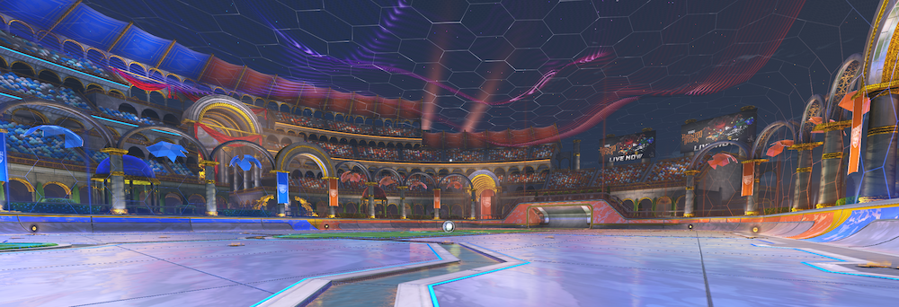
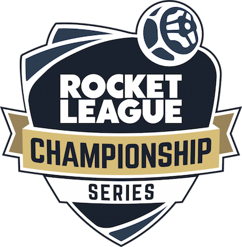

Rocket League is a popular videogame that combines elements of soccer and (in my opinion) hockey with
vehicular mayhem. Developed and published by Psyonix, it was initially released in July 2015 for various
gaming platforms. The game's unique blend of sports and vehicular action has made it a global phenomenon.
In Rocket League, players control customizable rocket-powered cars, which they use to play a variant of
soccer. The objective is to score goals by hitting a giant ball into the opposing team's goal while also
defending their own goal. A match of Rocket League is typically five minute, unless the teams are tied at
the end of the 5 minute counter; in which case there is sudden-death overtime The game can be played in
various modes, including solo duels, 2v2, and 3v3.
There
are other variations of the classic game of Rocket League, including Hoops (basketball), Snow Day
(hockey),
Dropshot (unique floor breaking game), and Rumble (a mode with randomized power-ups.
Key Features of Rocket League:
High Flying Action: The rocket-powered cars can jump, flip, boost, and air roll;
allowing for acrobatic maneuvers and spectacular plays.
Mechanics: Rocket League is an easy game to pick up, but an extremely challenging
game to master. There are various mechanics to train, such as Dribbling, Air Dribbling, Wave Dashing,
Flip Resets, Ceiling Shots, Shooting, Aerials, and more.
Customization: Players can customize their cars with various skins, decals, toppers,
and other cosmetic items to make their vehicles unique.
Competitive Play: The game has a competitive ranking system, where players can climb
the ranks by participating in ranked matches, aiming to become a top-tier player.
Zero-Second Goals: When the timer counts down to zero the game isn't over unless the
ball touches the ground. Zero-second goals can lead to dramatic and intense endings to matches, or
beginnings to sudden death overtimes.
Demolitions: You can intentionally crash your car into an opponent's car, temporarily
removing it from the game in a big explosion. Demolitions add an exciting element to the game, but they
are high-risk, high-reward plays.
Esports: Rocket League has a thriving esports scene with tournaments and competitions
at various levels, from community events to professional championships. They 2023 World Championship had
a prize pool of $2,100,000 USD.

Rocket League Championship Series:
What is RLCS?
The Rocket League Championship Series (RLCS) is a professional esports league for the popular video game
Rocket League. RLCS is organized and operated by Psyonix, the developer of Rocket League. It features
competitive gameplay and tournaments for top Rocket League players and teams from around the world.
The Rocket League Championship Series has significantly contributed to the growth and recognition of Rocket
League as a competitive esports title. It provides a platform for talented players and teams to compete at
the highest level and offers viewers thrilling matches and exciting gameplay.
Structure: RLCS is typically divided into regional competitions, including North
America, Europe, Oceania, and sometimes other regions. Each region has its own series of tournaments
leading to international events.
Seasons: RLCS seasons generally consist of a league play stage, followed by regional
championships, and ultimately culminating in a World Championship. These events are spread out over
several weeks.
International Competition: The World Championship brings together the best teams from
each region to compete on a global stage. It's the most prestigious event in Rocket League esports.
Prize Money: The RLCS offers significant prize money for the best-performing teams and
players, with the World Championship having the highest prize pool.
Professional Teams and Players: RLCS has attracted numerous professional esports
organizations that field Rocket League teams, and many players have become well-known in the esports
world.
Broadcast and Streaming: The RLCS events are broadcasted on various streaming
platforms, with expert commentators and analysts providing in-depth coverage and analysis.
Fan Engagement: Rocket League has a dedicated and passionate fan base, and RLCS events
attract large viewership, both in-person and online, with fans cheering for their favorite teams and
players.

History of Rocket League:
Rocket League's Release (2015): Rocket League was initially released in July 2015 and
featured a simple yet addictive combination of rocket-powered cars playing soccer in a virtual arena.
Aerial Mechanics (2015-2016): Early on, players began to master the art of aerials,
allowing them to fly through the air and perform incredible shots and saves. This mechanic added a new
dimension to the gameplay.
First Major Tournament - RLCS Season 1 (2016): The Rocket League Championship Series
(RLCS) started in 2016, providing a professional platform for players to compete. The first season saw teams
like Cosmic Aftershock and FlipSid3 Tactics competing for the title.
Advanced Aerials and Freestyling (2016-2017): Players started incorporating advanced
aerial maneuvers, and "freestyling" became a popular and flashy way to score goals. These mechanics added a
layer of creativity to the game.
Second Major Tournament - RLCS Season 3 (2017): The third season of RLCS featured prize
pools in the hundreds of thousands of dollars, solidifying Rocket League as a competitive esports title.
Car Control and Wave Dash (2018-2019): Players began perfecting car control, utilizing
wave dashes, flip resets, and air dribbles to outmaneuver opponents and make impressive plays.
RLCS World Championship (2019): The RLCS World Championship became an annual event,
drawing thousands of fans to watch the best teams from around the world compete for the title.
Rocket League Goes Free-to-Play (2020): In September 2020, Rocket League became
free-to-play, attracting even more players to the game and the esports scene.
Rocket League Championship Series X (2020-2021): The RLCS was rebranded as RLCS X, with a
new format that included multiple splits and major events, offering substantial prize money and
opportunities for players and teams.
Mechanical Mastery (Ongoing): Rocket League continues to evolve with players constantly
pushing the boundaries of mechanics like flip resets, ceiling shots, and more, leading to breathtaking
moments in both professional and community play.
Renewed Focus on Team Play (Ongoing): The game's evolution includes an increasing
emphasis on team coordination, rotation, and strategy, making it even more exciting to watch as a spectator
sport.
The history of Rocket League's mechanics and professional esports moments is a testament to the game's
ongoing growth and the incredible skill of its players. The competitive scene is alive and well, and Rocket
League remains a thrilling and popular esport.